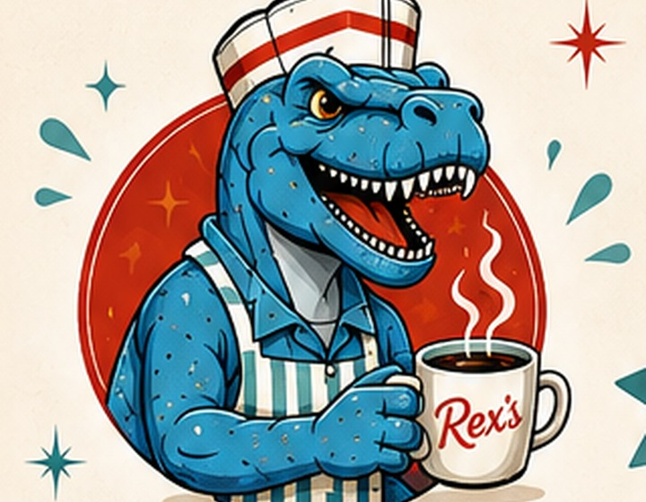

LIITU REX’SIGA
Tööle Rex’si
Otsime oma tiimi inimesi, kes on aktiivsed, sõbralikud, usaldusväärsed ja valmis päriselt panustama.

CREW
Hea tiim teeb heast dinerist koha, kuhu tahetakse tagasi tulla.Meie jaoks loeb kõige rohkem suhtumine, aktiivsus ja meeskonnatunne.
KEDA ME OTSIME?
Hea inimene enne, kogemus pärast.
Varasem kogemus ei ole kõige olulisem — palju tähtsam on hea suhtumine, soov õppida ning oskus klientide ja töökaaslastega normaalselt ja lugupidavalt suhelda.
MIDA ME HINDAME?
Suhtumine loeb.
Me ei eelda, et tead esimesel päeval kõike. Olulisem on see, et tahad õppida, oskad kuulata ning suudad töötada koos teistega.
Meile meeldib, kui töötaja ei oota iga väikese asja jaoks korraldust, vaid oskab ise märgata, kus saab midagi teha või kellegi appi minna.
MILLISE NÄEB TÖÖ VÄLJA?
Milline on töö Rex’sis?
Tellimuste vastuvõtmine ja sõbralik suhtlus klientidega.
Vajadusel kõnedele vastamine ja klientide aitamine.
Hoiame silma peal, et vajalikku toorainet jätkuks. Kui midagi hakkab otsa saama või on puudu, anname sellest vajadusel juhtkonnale teada.
Aitame üksteist ning märkame ise, kus on parasjagu abi vaja.
KANDIDEERIMINE
Soovid proovida?
Avalduse saad jätta Rex’s Dineris kohapeal või täita meie Google Formsi. Vaatame avaldused üle ning võtame ühendust kandidaatidega, kellega soovime edasi vestelda.